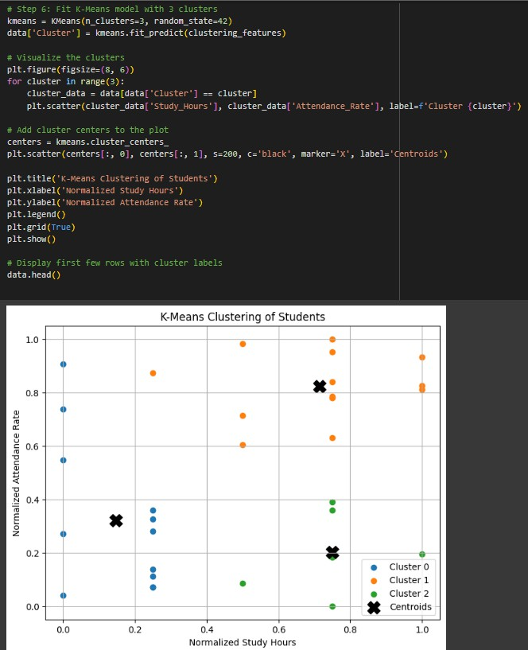
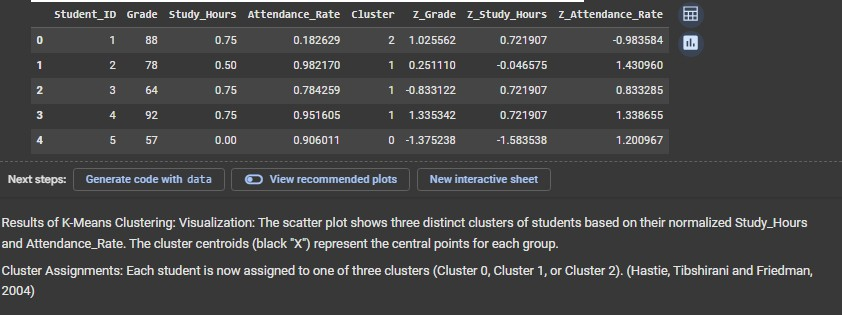
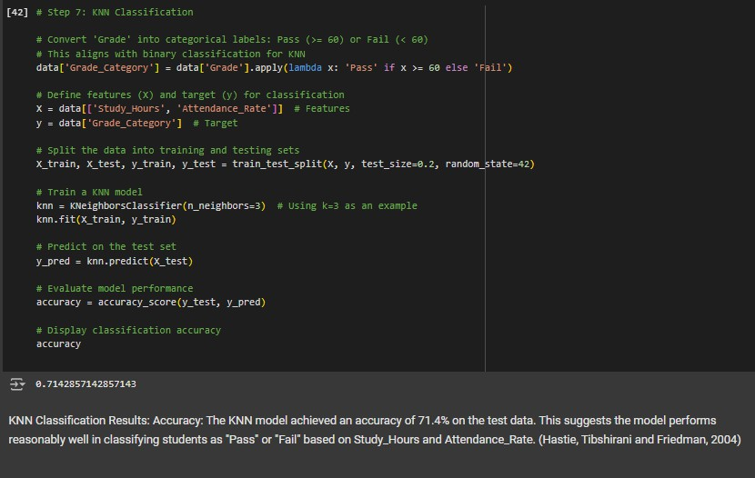
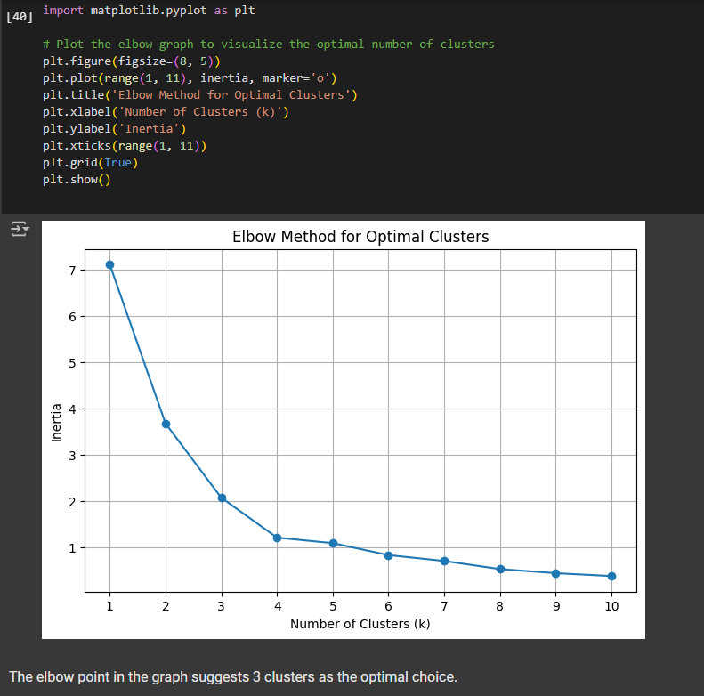

Overview
This project focused on two clear tasks: grouping students by study behaviour and attendance using clustering, and classifying pass/fail outcomes using KNN. The page is intentionally focused on the parts of the report that are cleanly supported by the extracted visuals.
Python MinMaxScaler K-Means Elbow Method KNN
Approach
- Scaled Study_Hours and Attendance_Rate using MinMaxScaler.
- Applied an 80/20 train-test split for the classification step.
- Used the elbow method to select the number of K-Means clusters.
- Built a KNN classifier to predict pass/fail outcomes.
Key Findings
- KNN classification achieved 71.4% accuracy on the test set.
- K-Means clustering suggested 3 clusters as the best fit by the elbow method.
- The clustering visuals show distinct groupings based on normalised Study_Hours and Attendance_Rate.
- The pass/fail distribution in the report was heavily imbalanced, with 87.9% pass and 12.1% fail.
This project page focuses on clustering patterns and KNN classification results from the student-performance analysis.




Metrics
Analytical Value
This project shows a sensible entry-level modelling workflow: scale the features, inspect whether natural groups appear in the data, and test a simple classifier for a clear prediction task. It is presented as exploratory analysis rather than production-grade modelling.